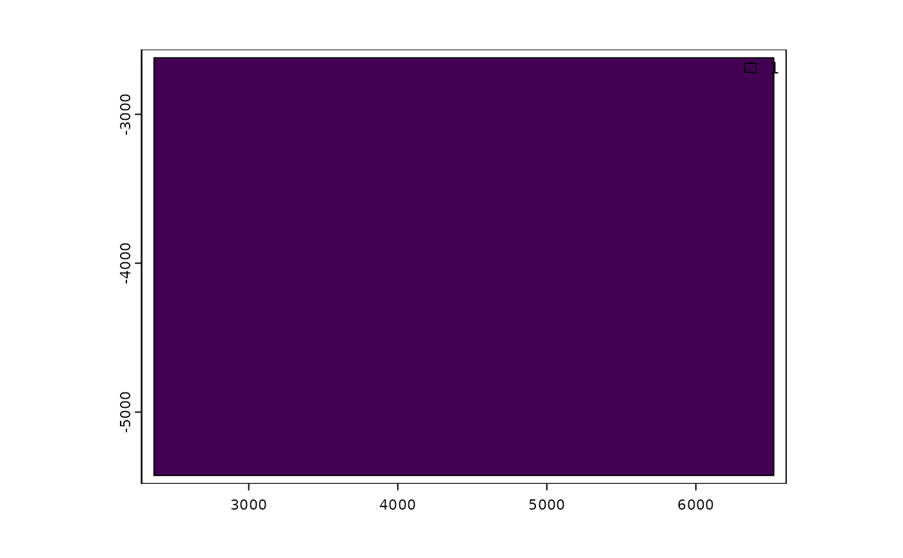

Stitch multiple giottoLargeImage objects into a single giottoLargeImage object
Source:R/images.R
stitchGiottoLargeImage.RdFunction to stitch together multiple field of view (FOV) images
into a single final image. Images are loaded into Giotto
as giottoLargeImage and stitched based on a set of FOV positions
into a single final giottoLargeImage.
Usage
stitchGiottoLargeImage(
largeImage_list = NULL,
gobject_list = NULL,
largeImage_nameList = NULL,
FOV_positions = NULL,
FOV_xcol = NULL,
FOV_ycol = NULL,
FOV_inverty = FALSE,
method = c("mosaic", "merge"),
round_positions = FALSE,
filename = NULL,
dataType = NULL,
fileType = NULL,
dryRun = TRUE,
overwrite = FALSE,
verbose = TRUE
)Arguments
- largeImage_list
list of
giottoLargeImageobjects- gobject_list
list of
gobjectscontaininggiottoLargeImages- largeImage_nameList
list of names of
giottoLargeImageswithingobjects- FOV_positions
dataframe of FOV positions. Values (if any) are directly added to current image mapping
- FOV_xcol
column name for FOV position x values
- FOV_ycol
column name for FOV position y values
- FOV_inverty
make FOV y position values negative
- method
method of stitching images (mosaic: average overlapping area values, merge:values get priority by order of images given)
- round_positions
boolean. Round image positions. May be necessary to run.
- filename
file name to write the stitched image to. Defaults to
"save_dir/stitch.tif"ifsave_dirparam is found in the firstgobject's Giotto instructions- dataType
(optional) values for
dataTypeare "INT1U", "INT2U", "INT2S", "INT4U", "INT4S", "FLT4S", "FLT8S". The first three letters indicate whether thedataTypeis integer (whole numbers) of a real number (decimal numbers), the fourth character indicates the number of bytes used (allowing for large numbers and/or more precision), and the "S" or "U" indicate whether the values are signed (both negative and positive) or unsigned (positive values only).- fileType
(optional) image format (e.g. .tif) If not given, defaults to format given in the filename
- dryRun
boolean. Plot placeholder bounding rectangles where FOV images will be stitched without actually proceeding with the full image stitching and saving process.
- overwrite
boolean. Overwrite if filename to save image as already exists. Defaults to TRUE
- verbose
boolean. Be verbose
Details
This function is time consuming. Setting a save location through the
filename parameter is also highly recommended as file size will
likely be large. This function creates a single stitched image from multiple
FOV tiles and saves that image to disk as it works. When finished, the
pointer to that new image is loaded in as a giottoLargeImage
object.
Note: Dry runs are on by default and dryRun
param must be set to FALSE to proceed with the final stitching operation.
Dry runs are default
To ensure that disk space and time is not wasted, this function defaults to previewing the stitching operation.
FOV positions
The final image is stitched together from multiple FOV tiles.
The FOV_positions parameter accepts a table of x and y values for
where each FOV tile should be placed when performing the stitch. Which
columns are the x and y values are determined by the FOV_xcol
and FOV_ycol params respectively. FOV tiles are at full resolution
with a starting position where either the lower left or upper left of
the image touch the origin depending on the value of FOV_inverty
param. The FOV image is then translated according to the x and y shift
values.
FOV invert y
Many imaging systems may treat the origin according to image convention
where (0,0) is at the upper left of an image. This is at odds with
coordinate convention and what Giotto uses internally where the
coordinate (0,0) is at the lower left. The FOV_inverty defaults
to FALSE, but if set to TRUE, then FOV tile images will start with the
upper left touching (0,0) and all y values given
through FOV_positions and FOV_ycol will be treated as
negative y shift values.
dataType
There are multiple datatypes defining the range of intensity values that
images can be saved with. Setting a value with the dataType para
is optional and Giotto attempts to determine compatible data type to
save the image as automatically.
Examples
g <- GiottoData::loadGiottoMini("visium")
#> 1. read Giotto object
#> 2. read Giotto feature information
#> 3. read Giotto spatial information
#> 3.1 read Giotto spatial shape information
#> 3.2 read Giotto spatial centroid information
#> 3.3 read Giotto spatial overlap information
#> 4. read Giotto image information
#> python already initialized in this session
#> active environment : 'giotto_env'
#> python version : 3.10
#> checking default envname 'giotto_env'
#> a system default python environment was found
#> Using python path:
#> "/usr/share/miniconda/envs/giotto_env/bin/python"
g_image <- getGiottoImage(g, image_type = "largeImage")
stitchGiottoLargeImage(largeImage_list = list(g_image))

#> NULL